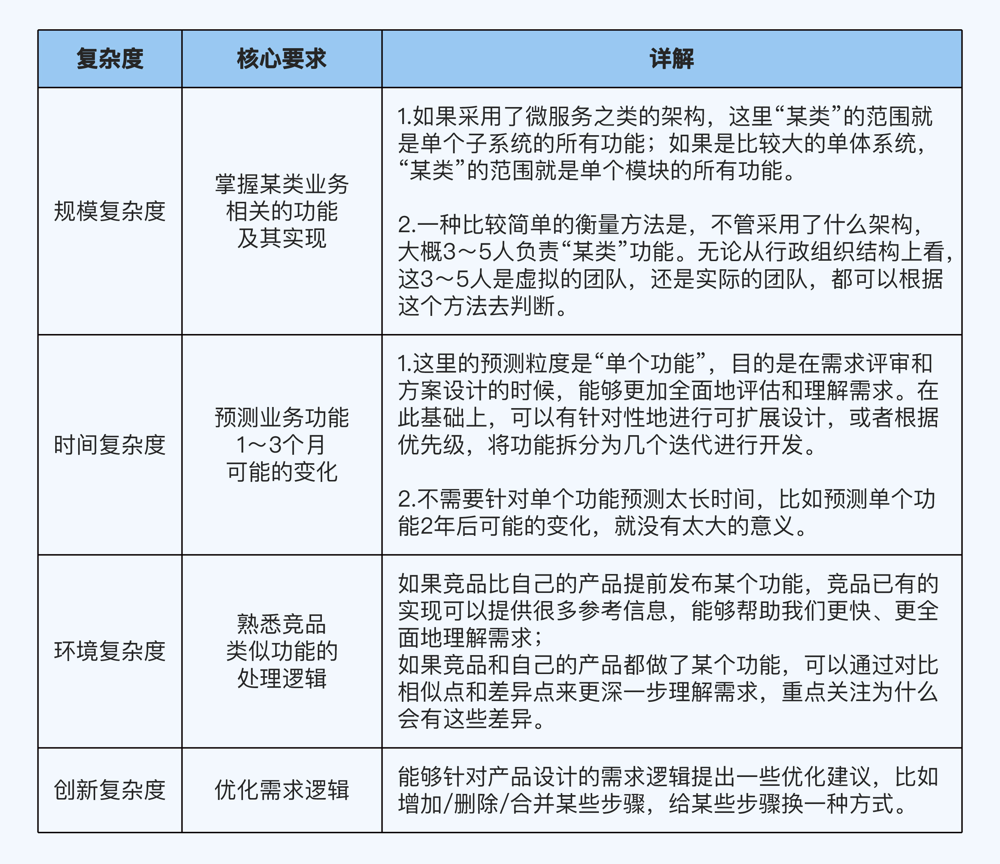
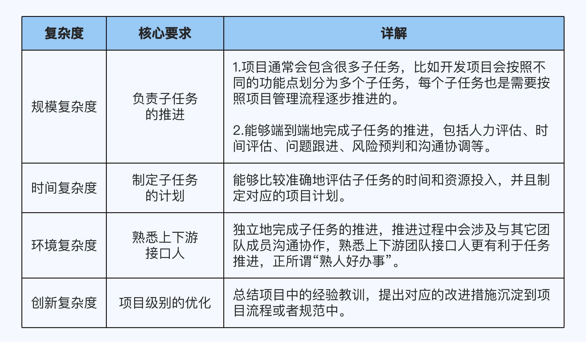

项目能手
项目能手对应p6
P6 对应的工作年限是 2～5 年，核心能力要求可以用一句话来概括: 独立负责端到端的任务。
这句话有两个关键词：
- 独立
不需要别人带着做了。P5 和 P6 的开发人员都会参加需求评审，只不过 P5 参加的时候只是在听，而 P6 可能就会针对需求直接提出意见。 - 端到端
负责项目中的某部分功能的全流程相关事项。开发的端到端事项包括需求评审、方案设计、编码、修改 bug 和上线等；测试的端到端事项包括需求评审、测试方案设计、执行测试和上线等；而产品的端到端事项则包括用户分析、需求写作、数据分析和竞品分析等。
技术
P6 在技术方面的核心要求是熟练掌握端到端的工作流技术，因为 P6 是项目主力劳动力，需要参与项目流程中的某些阶段，完成分配的任务。
在 P6 阶段，提升技术能力的关键就是掌握团队用到的各种技术的“套路”。
以 Android 开发人员为例，套路包括设计模式、SOLID 设计原则、Android 的 MVP 架构和各类工具（比如 Fiddler，Wireshark，tcpdump）等。不同岗位的“套路”不同，可以自行整理，也可以求助团队中有经验的同事。
除了熟练使用套路，P6 还需要深入理解套路背后的技术原理和细节，提升自己的技术深度。
以设计模式为例，P5 可能只知道每个设计模式是什么意思，但是 P6 还要知道什么时候用设计模式，什么时候不用设计模式，具体应该用哪个设计模式。
P5 只知道 what，P6 还知道 why。
重点抓住跟当前工作内容强相关的技术点和技术套路，深入学习和研究，重点提升技术深度。如果有精力，你再去拓展学习一些暂时用不到、但以后很可能会用到的技术。
千万不要因为短时间内什么流行就去学什么，一会儿学这个一会学那个，结果什么都懂一点，什么都不精通。
业务
要求对功能掌握的更全面, 基本上要掌握某类业务的所有功能, 再一个是对逻辑处理的理解更深刻, 要求理解需求的"上下文信息".
比如需求能给用户或客户带来什么价值, 解决了什么问题, 为什么设计5个步骤而不是3个步骤, 为什么竞品的功能设计跟我们不一样
p6对业务能力的要求

管理
P6 管理能力的要求主要是能够负责项目中的子任务推进。
p6对管理能力的要求

工作量评估
- 拍脑袋法
让团队有经验的人直接拍脑袋想一个工作量数字。 - 扑克牌法
找 3～5 个人员，每人给一张小纸条，每个人把工作量评估写在纸条上，最后取平均值。 - 对比法
参考曾经做过的类似的项目，看看之前的项目工作量是多少，然后以此为基础想一个数字。 - WBS 分解法
把需求拆解为多项小任务，单独评估每个小任务的工作量，然后汇总；评估小任务的工作量的时候可能采取上面这 3 种方法。
WBS 的全称是 Work Breakdown Structure，中文翻译是“工作分解结构”。WBS 分解法的原理是，通过把项目工作按阶段可交付成果分解成更小的、更易于管理的组成部分，来提升项目管理的效率。
避免过于乐观的评估, 给工作量评估时加一个buffer, 来避免意外发生
既在原有的工作量上乘上一个浮动系数来决定最终工作量
例如估计的是10人天, 那buffer系数取1.2, 查考工作量就是12人天